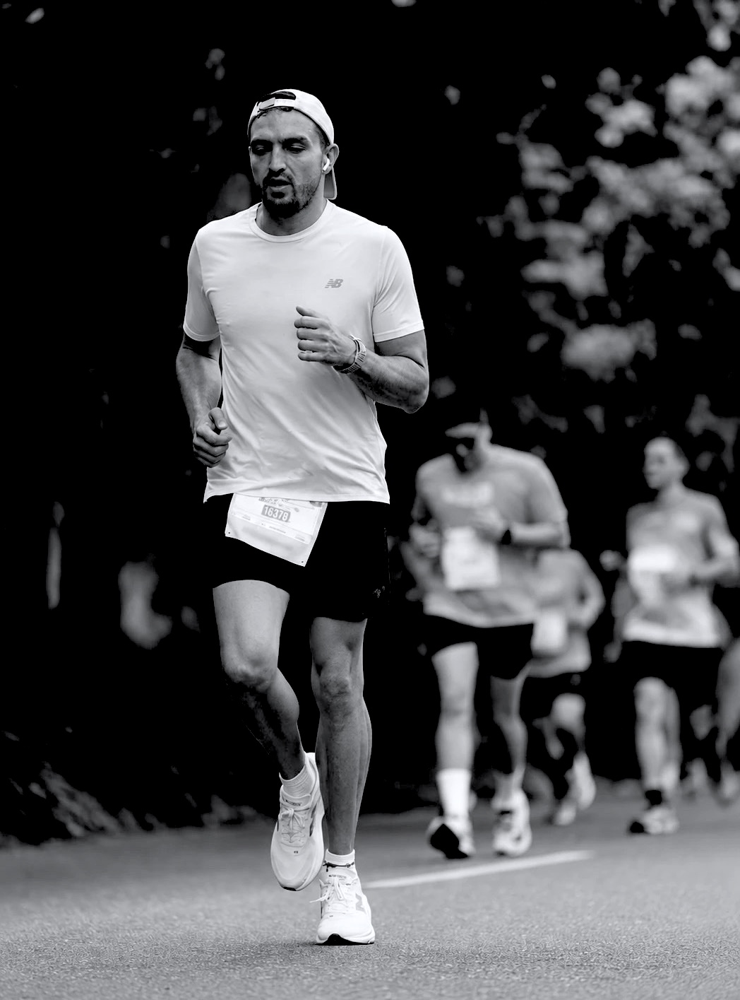
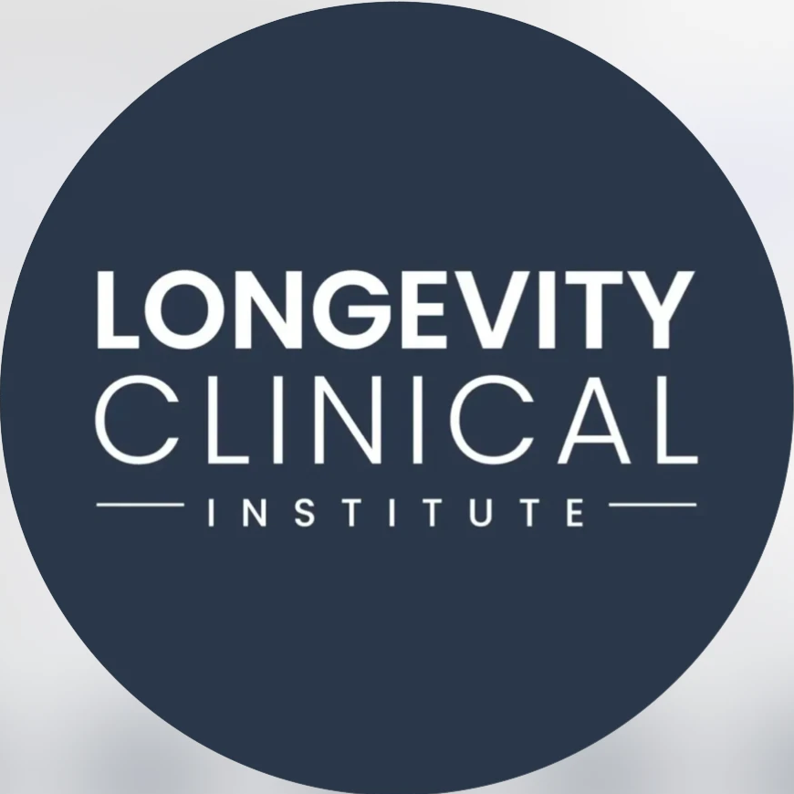
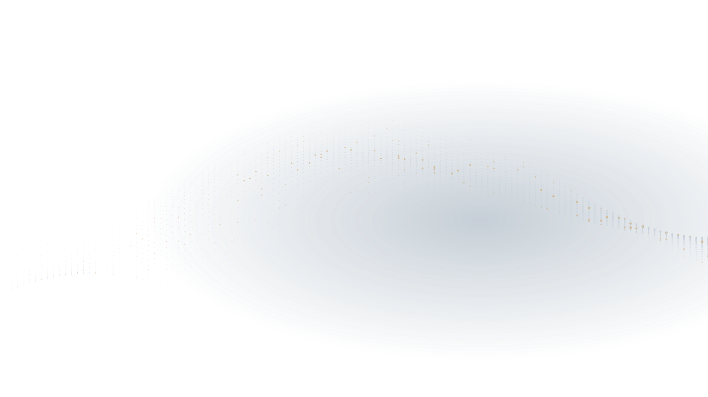
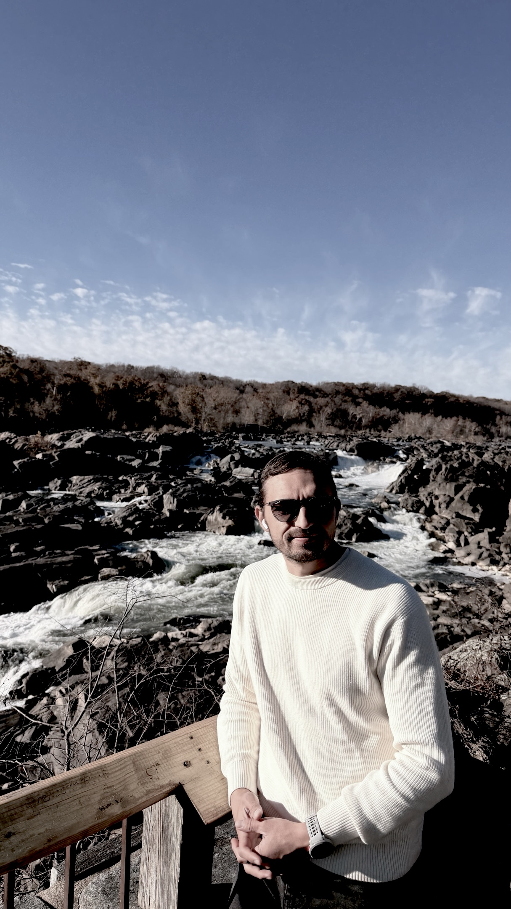
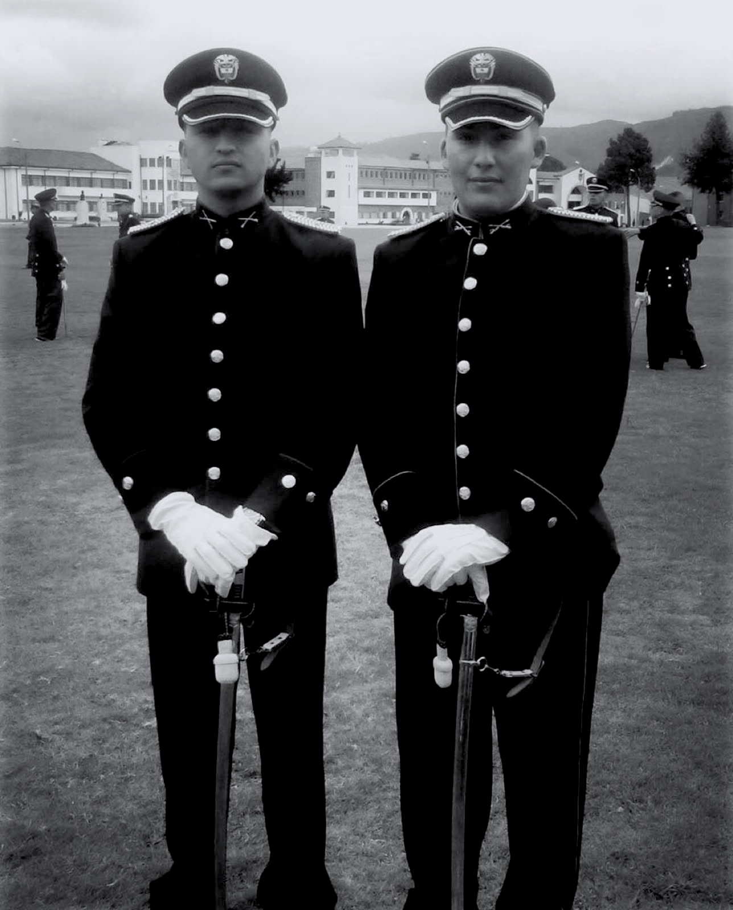
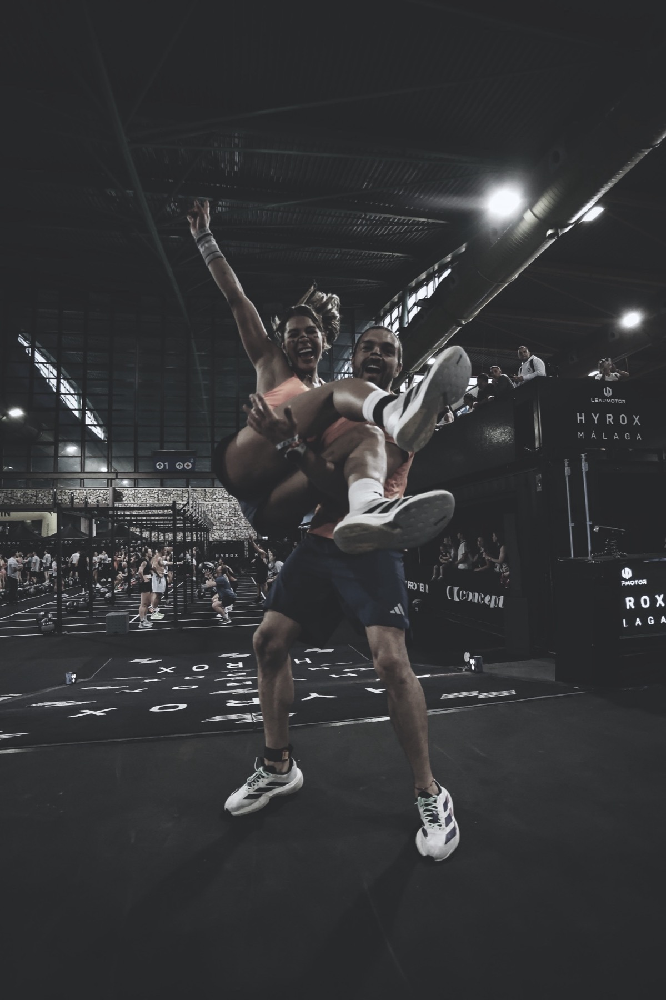
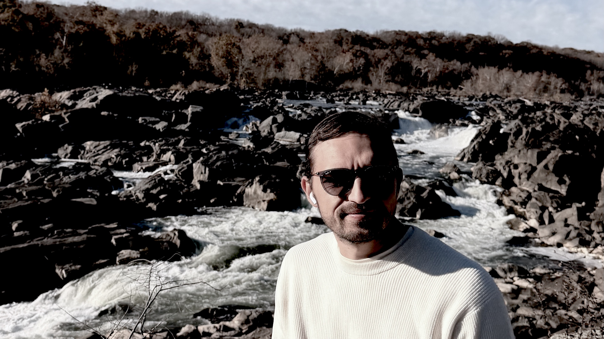

ANDRÉS CEBALLOS
×

PROYECTO
La construcción de un atleta.
36
AÑOS
2
HERNIAS
8
MESES
21,1 KM
DISTANCIA
SUB 1:20
OBJETIVO

NO SE TRATA SOLO DE CORRER
LA MÉTRICA
1:20
LA HISTORIA
La transformación
EL PROPÓSITO
La inspiración
PROYECTO 1:20
/ 19

LA PERSONA DETRÁS DEL ATLETA
¿QUIÉN SOY?
EDAD
36 años
FAMILIA
Padre de dos hijos
OFICIO
Empresario
ORIGEN
Exoficial del Ejército
“No tengo más tiempo que los demás. Tengo un propósito y decidí construir un sistema para alcanzarlo.”
PROYECTO 1:20
/ 19
TENGO UNA VIDA, COMO TODOS
“No tengo tiempo.”
“Tengo hijos.”
“Tengo trabajo.”
“Estoy demasiado grande.”
“Ya lo he intentado.”
“Tengo una lesión.”
“No soy atleta.”
PROYECTO 1:20
/ 19

EXOFICIAL DEL EJÉRCITO
LO QUE ME DIO EL EJÉRCITO
Fui oficial del Ejército. Allí aprendí que la disciplina no depende de la motivación: es lo que haces cuando nadie te está mirando. Desde entonces, cada reto difícil no me frena. Me impulsa.
Disciplina
Cumplir aunque no haya ganas.
Misión
Un objetivo claro y un plan.
Resiliencia
Caer, ajustar y volver a avanzar.
Liderazgo
Ser el ejemplo antes de pedirlo.
PROYECTO 1:20
/ 19

HYROX MÁLAGA
LAS CICATRICES
2
HERNIAS DISCALES
Dos hernias discales y otras lesiones. Hubo momentos en los que entrenar no parecía posible. Aprendí a escuchar mi cuerpo, a respetarlo y a volver.
HYROX
Mejor tiempo: 1:07
Medias maratones
De 2:01 a 1:42
PROYECTO 1:20
/ 19
HASTA AQUÍ, CON DISCIPLINA
ANTES
2:01
Media maratón
−19 MIN
Disciplina
HOY
1:42
Mi mejor marca
−22 MIN
Disciplina + ciencia
EL RETO
1:20
Juntos
Bajé 19 minutos sin un sistema clínico detrás. Los próximos 22 son los más difíciles: ahí es donde la ciencia marca la diferencia.
PROYECTO 1:20
/ 19
MI TRANSFORMACIÓN
01
Ejército
Disciplina · Liderazgo · Resiliencia · Mentalidad
02
Empresario
Presión · Decisiones · Ejecución · Responsabilidad
03
Padre
Propósito · Responsabilidad · Tiempo · Ejemplo
04 — LA CONVERGENCIA
Atleta
Disciplina · Performance · Salud · Longevidad
PROYECTO 1:20
/ 19
EL RETO · 21,1 KM EN MENOS DE 1 HORA Y 20 MINUTOS
SUB
21,1 km
MEDIA MARATÓN
3:47 /km
RITMO MEDIO NECESARIO
8 meses
PLAZO
Punto de partida: 1:42. En el camino: otras medias maratones. Después: maratones de relevancia internacional, incluidos World Marathon Majors.
PROYECTO 1:20
/ 19

¿POR QUÉ A LOS 36?
36
La edad no define nuestro límite. Nuestro punto de partida tampoco.
No sé todavía si lo voy a conseguir. Y precisamente por eso vale la pena documentarlo.
PROYECTO 1:20
/ 19
EL EXPERIMENTO
Salud
Prevención
Biomarcadores
Recuperación
Hábitos
Calidad de vida
×
Running
Resistencia
VO₂max
Rendimiento cardiovascular
Entrenamiento
Recuperación y adaptación
No se trata solo de sumar años a la vida. Se trata de sumar vida a los años, y de seguir siendo capaces de hacer cosas extraordinarias.
PROYECTO 1:20
/ 19
EL SISTEMA · BIOHACKING SIN ATAJOS
No son trucos, suplementos ni gadgets. Es un método que se repite durante ocho meses, con protocolos definidos junto con Longevity Clinical.
01
MEDIR
02
ENTENDER
03
OPTIMIZAR
04
ENTRENAR
05
RECUPERAR
06
VOLVER A MEDIR
07
ADAPTAR
Sin adivinar.
PROYECTO 1:20
/ 19
LA CIENCIA
El baseline del proyecto todavía está por medir. Cada dato se publicará tal como salga.
01
Cuerpo
Composición corporal
Masa muscular
Grasa corporal
Peso
BASELINE [ — ]
02
Rendimiento
Capacidad cardiovascular
VO₂max
Ritmos
Evolución del rendimiento
Variables de entrenamiento
BASELINE [ — ]
03
Recuperación
Sueño
HRV
Frecuencia cardíaca en reposo
Indicadores de recuperación
BASELINE [ — ]
04
Salud
Biomarcadores
Salud metabólica
Estado nutricional
Otros indicadores determinados clínicamente
BASELINE [ — ]
EVALUACIONES Y FRECUENCIA DETERMINADAS POR EL EQUIPO CLÍNICO DE LONGEVITY CLINICAL
PROYECTO 1:20
/ 19
LOS 8 MESES
MES 0
Baseline
¿Dónde estoy hoy?
MESES 1–2
Build
Construcción de la base.
MESES 3–4
Adapt
Adaptación y evolución.
MESES 5–6
Optimize
Optimización.
MES 7
Peak
Preparación específica.
MES 8
Race day
21,1 KM · SUB 1:20
Cada fase empieza con una medición y termina con un ajuste. Las evaluaciones de cada etapa las define el equipo clínico.
PROYECTO 1:20
/ 19
44.000 PERSONAS / UNA HISTORIA
44.000
personas que pueden acompañar el experimento.
Identificarse.
Inspirarse.
Empezar.
“El objetivo no es que me vean lograrlo. Es que alguien que está mirando piense: «Si él pudo empezar, yo también puedo».”
COMUNIDAD APROXIMADA EN INSTAGRAM
PROYECTO 1:20
/ 19
EL CONTENIDO
EP 01
El punto de partida
EP 02
¿Qué dice mi cuerpo?
EP 03
Construyendo el motor
EP 04
Entrenar con dos hernias
EP 05
Los primeros resultados
EP 06
Los obstáculos
EP 07
La preparación final
EP 08
21,1 km — sub 1:20
Los avances y también los obstáculos, los ajustes, las frustraciones y los aprendizajes. Sin guion de éxito perfecto: la autenticidad es parte del valor.
PROYECTO 1:20
/ 19
POR QUÉ LONGEVITY CLINICAL
LA CIENCIA
+
Andrés
EL CASO REAL
+
44.000
LA COMUNIDAD
=
PROYECTO
1:20
LONGEVITY CLINICAL APORTA
Conocimiento clínico · Evaluación · Interpretación · Seguimiento · Optimización · Ciencia · Estructura
ANDRÉS APORTA
El caso real · La disciplina · La historia · La documentación · La comunidad · El contenido · La exposición
PROYECTO 1:20
/ 19
LO QUE PUEDE GANAR LONGEVITY CLINICAL
01
Caso real
Un proceso de transformación documentado durante 8 meses.
02
Storytelling
Una historia humana: lesiones, disciplina y rendimiento.
03
Educación
Contenido que explica salud, recuperación, rendimiento y optimización.
04
Visibilidad
Integración natural de Longevity Clinical en el proceso.
05
Comunidad
Una audiencia que puede identificarse con el proceso.
06
Contenido de largo plazo
No una publicación aislada: una narrativa continua.
07
Proyecto replicable
Un modelo que podría inspirar a otras personas a iniciar procesos similares.
Una colaboración de valor mutuo.
PROYECTO 1:20
/ 19
PROYECTO
1:20
El objetivo es 1:20.
El propósito es demostrar
qué es posible.
ANDRÉS CEBALLOS
×
@andcefa90
andcefa@gmail.com
+57 321 215 4102